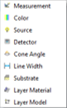

File Transfer
The File Transfer option enables the exchange of data files between different Problem Directories in DS Mode or Project Files in SF Mode. You can transfer the following types of files:
Measurements
Substrate
Layer Material
Layer Model
as illustrated below.

Data files are always transferred to the currently opened Problem Directory in DS Mode or the active Project File in SF Mode.
The File Transfer operation is performed in two steps:
Before entering File Transfer mode, you will be prompted to select a data source directory in the Select Directory window.
After selecting the appropriate directory, the File Transfer dialog opens.